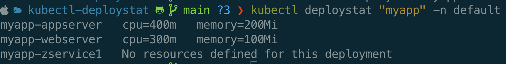

Golang CLI plugin to extend kubectl functionality
Extending the functionality of kubectl by creating a custom plugin using the popular Go package, Cobra. Kubernetes offers extensive command-line tools, but sometimes you need additional commands tailored to your specific workflow. By using Go and Cobra, you can easily add your own commands to kubectl, helping with automating repetitive tasks.
This application shows how to use the Cobra package, focusing on implementing a simple use case: retrieving deployments based on user input parameters. Based on the provided input, the app queries the cluster to find matching deployments and displays the requested memory and CPU. If no resource requests are set, it will display “None.” This functionality helps easily identify problematic deployments within the system. Additionally, the functionality is extensible to support other object types and custom requirements.
// packages used
"k8s.io/client-go/kubernetes"
"k8s.io/client-go/tools/clientcmd"
"github.com/spf13/cobra"
Using the cobra command type and providing the function to be called.
cobraVar := &cobra.Command{...}
RunE: func(cmd *cobra.Command, args []string) error {
return getDeployStat(args[0], opt)
},
With in app we are using clientcmd to get clientset for cluster authentication using kubeconfig file.
config, err := clientcmd.BuildConfigFromFlags("", *kubeconfig)
clientset, err := kubernetes.NewForConfig(config)
Then use this clientset to use the List method from DeploymentInterface and AppsV1Interface from the kubernetes client go package.
https://pkg.go.dev/k8s.io/client-go/kubernetes/typed/apps/v1#AppsV1Interface
https://pkg.go.dev/k8s.io/client-go/kubernetes/typed/apps/v1#DeploymentInterface
clientset := client.ClientSet()
deployments, err := clientset.AppsV1().Deployments(opt.namespace).List(context.TODO(), metav1.ListOptions{})
Once we have the deployment details we can loop through them and provide our custom logic to get, modify them. Here we loop through all the containers and get their requests for cpu and memory which is then displayed by the terminal.
This utility currently takes deployment name as a input to match and -n as a flag for namespace input which defaults to default namespace.

Thank You!
Github Code Link